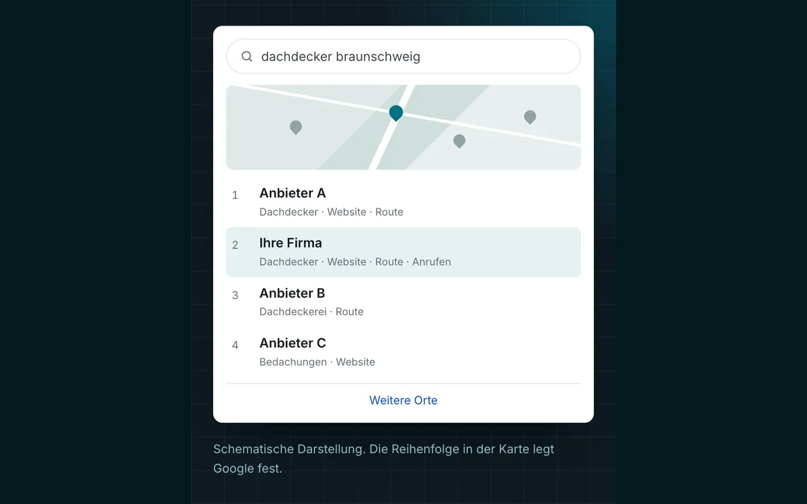

SEO Agentur Braunschweig: bei Google gefunden werden, wo Ihre Kunden suchen.
Wir sorgen dafür, dass Google Ihren Betrieb in Braunschweig richtig einordnet: mit einem gepflegten Google-Profil, eigenen Seiten für Ihre Leistungen und sauberer Technik. Zum Erstgespräch kommen wir aus Lehre zu Ihnen.
- ca. 20 Min.
- von Lehre zu Ihnen nach Braunschweig
- Monatlich
- Bericht aus Search Console und Profil
- Seit 2002
- IT-Systemhaus in Lehre
Schematische Darstellung. Die Reihenfolge in der Karte legt Google fest.
Drei Stellen, an denen Kunden Sie in Braunschweig finden
Wer in Braunschweig einen Betrieb sucht, gibt meist die Leistung und den Ortsnamen ein, etwa „Dachdecker Braunschweig“ oder „Steuerberatung Braunschweig“. Google antwortet darauf an drei Stellen: in der Kartenansicht mit drei Unternehmensprofilen, in den normalen Treffern darunter und bei manchen Suchen in einer KI-Übersicht ganz oben, die auch einzelne Firmen nennen kann.
Jede dieser Stellen folgt eigenen Regeln. In der Karte zählt vor allem Ihr Google-Unternehmensprofil. In den Treffern zählt Ihre Website, vor allem eine eigene Seite für die gesuchte Leistung in Braunschweig. Die KI-Übersicht stützt sich auf Websites und Profile, aber auch auf Verzeichnisse und Bestenlisten, in denen Ihr Betrieb vorkommt.
Viele Betriebe tauchen nur an einer dieser Stellen auf, häufig mit einem Profil, das lange niemand gepflegt hat. Wir sehen uns alle drei an und fangen dort an, wo für Ihre Leistungen am meisten zu holen ist.
Was wir für Ihre Sichtbarkeit tun
Google-Profil vollständig
Hauptkategorie und weitere passende Kategorien, Leistungen, Öffnungszeiten und echte Fotos. Name, Adresse und Telefonnummer gleichen wir mit Website und Verzeichnissen ab. Fahren Sie zu Ihren Kunden, legen wir ein Einzugsgebiet fest. Empfangen Sie an Ihrer Adresse keine Kunden, blenden wir sie aus, so wie Google es verlangt.
Seiten für Leistung und Ort
Die Leistungen, die Ihnen in Braunschweig Aufträge bringen, bekommen auf Ihrer Website je eine eigene Seite. Arbeiten Sie auch in Wolfenbüttel oder Peine, prüfen wir, ob sich dort eine weitere lohnt.
Technik aus einer Hand
Server, Hosting und Firewall betreuen wir als IT-Systemhaus auf Wunsch mit. Wir prüfen, ob Google und KI-Crawler Ihre Seiten erreichen, wie schnell sie auf dem Handy laden und ob das Zertifikat stimmt.
Suchbegriffe und Texte
Welche Begriffe Ihre Kunden mit „Braunschweig“ eingeben und wie oft, prüfen wir vor jeder neuen Seite mit Suchdaten von Google und Ihrer Search Console. Die Texte schreiben wir, online geht nur, was Sie freigegeben haben.
Bewertungen ohne Tricks
Bewertungen zählen bei Google zur Bekanntheit. Wir zeigen Ihnen einen einfachen Weg, Kunden nach dem Auftrag darum zu bitten, und formulieren auf Wunsch Ihre Antworten. Gekauft oder selbst geschrieben wird nichts.
Zahlen jeden Monat
Im Monatsbericht sehen Sie, bei welchen Suchen mit Braunschweig Sie erscheinen, wie oft geklickt wurde und wie viele Anrufe und Routenanfragen über das Profil kamen.
So entscheidet Google über die Karte in Braunschweig
Für die Reihenfolge in der Kartenansicht nennt Google drei Faktoren: Relevanz, Entfernung und Bekanntheit. Relevanz heißt, wie gut Ihr Profil zur Suche passt. Entfernung meint, wie weit Ihr Betrieb vom Suchenden entfernt ist. Steht ein Ort in der Suche, etwa „Braunschweig“, zeigt die Karte erfahrungsgemäß vor allem Betriebe in und um diesen Ort. Bekanntheit ergibt sich unter anderem aus Bewertungen, Links und Erwähnungen im Netz.
Die Entfernung können Sie nicht ändern. Ein Betrieb am Stadtrand hat bei einer Suche nach „Braunschweig“ andere Voraussetzungen als einer in der Innenstadt. Umso mehr zählen die beiden anderen Faktoren: ein vollständiges Profil mit den richtigen Kategorien und Leistungen, regelmäßig neue Bewertungen und eine Website, die bestätigt, was im Profil steht.
Für Betriebe im Umland, etwa in Wolfenbüttel, Cremlingen oder Lehre, ist die Karte bei Suchen nach „Braunschweig“ schwerer zu erreichen. Dort kann eine gute Seite für Leistung und Ort in den normalen Treffern der bessere Weg sein.

So läuft SEO für Ihren Betrieb in Braunschweig ab
Das Erstgespräch führen wir gern bei Ihnen im Betrieb, auf Wunsch per Video. Danach bekommen Sie Plan und Angebot schriftlich.
Termin bei Ihnen
Wir kommen zu Ihnen und klären, welche Leistungen Aufträge bringen sollen, wo Sie arbeiten und wer Ihre Kunden sind.
Bestandsaufnahme
Wir suchen Ihre wichtigsten Leistungen zusammen mit „Braunschweig“ bei Google, prüfen Profil, Website und Search Console und halten fest, wer dort vorn steht.
Plan und Angebot
Sie erhalten die Maßnahmen in sinnvoller Reihenfolge und ein schriftliches Angebot zum Festpreis. Eine Erfolgsbeteiligung ist als Option möglich.
Umsetzung und Bericht
Erst Technik und Profil, dann die Seiten. Jeden Monat sehen Sie die Zahlen und was als Nächstes kommt.
Festpreis, Erfolgsbeteiligung als Option
Nach dem Erstgespräch bekommen Sie ein schriftliches Angebot zum Festpreis, einmalig für die Einrichtung und monatlich für die Betreuung. Lassen sich Anfragen aus der Suche bei Ihnen gut zuordnen, ist auch eine Erfolgsbeteiligung möglich. Mehr dazu unter SEO & Local SEO.
Wer in Braunschweig für Ihre Leistungen vorn steht, sehen Sie schon in der Bestandsaufnahme. Einen bestimmten Platz sagen wir nicht zu, denn die Reihenfolge legt Google fest.
IT-Systemhaus aus Lehre, für Braunschweig da
STKom ist seit 2002 ein IT-Systemhaus mit Sitz in der Berliner Straße 60 in Lehre. Bisher haben wir mehr als 500 Unternehmen betreut, die meisten mit 10 bis 250 Mitarbeitenden, und mehr als die Hälfte arbeitet seit über fünf Jahren mit uns. Für Unternehmen in Braunschweig bieten wir auch IT-Service und Telefonanlagen an.
Für Ihre Suchmaschinenoptimierung heißt das: Anders als bei einer reinen SEO-Agentur können Website, Server, Domain und Postfächer bei einem Ansprechpartner liegen. Kommt Ihre Website technisch nicht mehr mit, bauen wir sie neu, siehe Webdesign Braunschweig. Und damit KI-Assistenten Ihren Betrieb richtig wiedergeben, gibt es die GEO-Optimierung.
Häufige Fragen zu SEO in Braunschweig
Was kostet SEO in Braunschweig bei STKom?
Das hängt davon ab, wie viel an Website und Profil zu tun ist und für wie viele Leistungen Sie in Braunschweig gefunden werden möchten. Nach dem Termin bekommen Sie ein schriftliches Angebot mit Festpreisen für Einrichtung und Betreuung. Eine Erfolgsbeteiligung ist als Option möglich.
Kommen Sie für das Erstgespräch nach Braunschweig?
Ja, gern in Ihren Betrieb. Lehre liegt etwa 20 Minuten von Braunschweig entfernt. Ein Gespräch per Video ist ebenso möglich, die weitere Abstimmung läuft dann per Telefon und Video.
Unser Betrieb liegt außerhalb von Braunschweig. Lohnt sich SEO für die Stadt trotzdem?
Oft ja, über die normalen Treffer. Dort zählt vor allem eine eigene Seite für Ihre Leistung in Braunschweig. In der Karte haben Betriebe in der Stadt durch die Entfernung einen Vorteil.
Reicht ein Google-Profil ohne Website?
Für die Kartenansicht kann ein gutes Profil schon viel bewirken. In den normalen Treffern und in vielen KI-Antworten erscheinen aber Websites. Außerdem sollte das Profil auf eine Seite verweisen, die Ihre Leistung genauer erklärt. Beides gehört zusammen.
Wie lange dauert es, bis sich etwas bewegt?
Einen festen Zeitraum nennen wir nicht. Er hängt davon ab, wie viele Betriebe in Braunschweig für Ihre Leistung um dieselben Plätze werben und in welchem Zustand Website und Profil sind. Im Monatsbericht sehen Sie, wie sich Ihre Positionen bei Suchen mit Braunschweig entwickeln.
Unsere Kunden sitzen nicht nur in Braunschweig. Passt das trotzdem?
Ja. Dann zählt weniger die Karte als Seiten, die Ihre Produkte und Verfahren so beschreiben, wie Einkäufer und Fachleute danach suchen, auch bundesweit. Das Erstgespräch führen wir trotzdem gern bei Ihnen in Braunschweig. Für Zulieferer siehe Automotive-Zulieferer.
Wie funktioniert die Erfolgsbeteiligung?
Bei dieser Option werden wir an den Aufträgen beteiligt, die über die Google-Suche zu Ihnen kommen. Wie Anfragen gezählt werden und was als Auftrag gilt, legen wir vorher schriftlich fest. Ob das Modell zu Ihrem Betrieb passt, besprechen wir im Erstgespräch.
Passt oft dazu
Wie werden Sie in Braunschweig gefunden? Schreiben Sie uns.
Nennen Sie uns Ihre Website und die Leistungen, für die Kunden Sie in Braunschweig finden sollen. Wir melden uns zu unseren Geschäftszeiten und vereinbaren einen Termin.
- Telefon, Mo–Do 8:30–17:00 Uhr, Fr 8:30–15:30 Uhr05308 935030
- E-Mailinfo@stkom.de
- AdresseBerliner Straße 60, 38165 Lehre